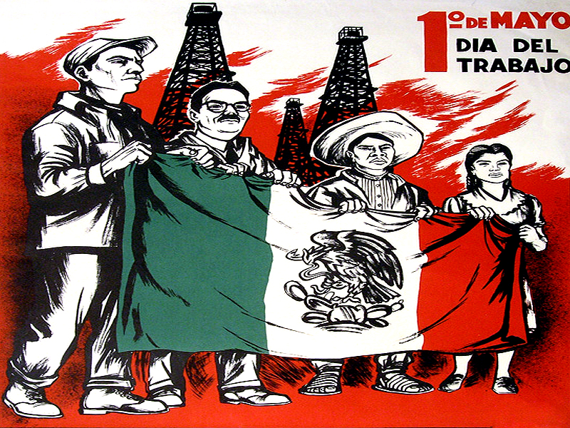

El Día Internacional de los Trabajadores o Primero de Mayo es la fiesta por antonomasia del movimiento obrero mundial. Es una jornada que se ha utilizado habitualmente para realizar diferentes reivindicaciones sociales y laborales a favor de las clases trabajadoras por parte, fundamentalmente, de los movimientos socialistas, anarquistas y comunistas, entre otros.
Desde su establecimiento en la mayoría de países (aunque la consideración de día festivo fue en muchos casos tardía) por acuerdo del Congreso Obrero Socialista de la Segunda Internacional, celebrado en París en 1889, es una jornada de lucha reivindicativa y de homenaje a los Mártires de Chicago. Estos sindicalistas anarquistas fueron ejecutados en Estados Unidos por participar en las jornadas de lucha por la consecución de la jornada laboral de ocho horas, que tuvieron su origen en la huelga iniciada el 1 de mayo de 1886 y su punto álgido tres días más tarde, el 4 de mayo, en la Revuelta de Haymarket. A partir de entonces se convirtió en una jornada reivindicativa de los derechos de los trabajadores en sentido general que es celebrada en mayor o menor medida en todo el mundo.
En Estados Unidos, Canadá y otros países no se celebra esta conmemoración. En su lugar se celebra el Labor Day el primer lunes de septiembre en un desfile realizado en Nueva York y organizado por la Noble Orden de los Caballeros del Trabajo (Knights of Labor, en inglés). El presidente estadounidense Grover Cleveland auspició la celebración en septiembre por temor a que la fecha de mayo reforzase el movimiento socialista en los Estados Unidos desde 1882. Canadá se unió a conmemorar el primer lunes de septiembre en vez del primero de mayo a partir de 1894.
La batalla de Puebla fue un combate librado el 5 de mayo de 1862 en las cercanías de la ciudad de Puebla, entre los ejércitos de la República Mexicana, bajo el mando de Ignacio Zaragoza, y del Segundo Imperio Francés, dirigido por Charles Ferdinand Latrille, conde de Lorencez, durante la Segunda Intervención Francesa en México, cuyo resultado fue una victoria importante para los mexicanos ya que con unas fuerzas consideradas como inferiores lograron vencer a uno de los ejércitos más experimentados y respetados de su época. Pese a su éxito, la batalla no impidió la invasión del país, sólo la retrasó, sin embargo, sería la primera batalla de una guerra que finalmente México ganaría. Los franceses regresarían al siguiente año, con lo que se libró una segunda batalla en Puebla en la que se enfrentaron 35 000 franceses contra 29 000 mexicanos (defensa que duró 62 días), y lograrían avanzar hasta la Ciudad de México, lo que permitió establecer el Segundo Imperio Mexicano.
Finalmente, ante la incapacidad de consolidar un imperio y después de perder 11 000 hombres debido a la actividad guerrillera que nunca dejó de subsistir,1 los franceses se retiraron incondicionalmente del país en el año de 1867.


El Día de la Madre o Día de las Madres es una festividad que se celebra en honor a las madres en todo el mundo, en diferentes fechas del año según el país. Su origen contemporáneo se remitiría al Mother's Friendship Day y las reuniones Mother's Day Meetings organizadas en 1865 o 1868 por Ann Maria Reeves Jarvis, en que las madres se reunían para intercambiar opiniones sobre distintos temas de actualidad.
En México el Día de la Madre se celebra anualmente el 10 de mayo, sin ajustarse a días de la semana como otros países. Este día se habría festejado por primera vez en 1911, pero no fue hasta 1922 cuando se habría institucionalizado por iniciativa del director del Excelsior Rafael Alducín, probablemente influenciado por el Secretario de Educación José Vasconcelos, aunque se sugiere que «esta iniciativa fue en realidad una reacción a un movimiento feminista» yucatanense.
El Día de la Madre se ha convertido en una fecha de relevancia en el país y ha generado un impacto en la cultura mexicana; la celebración incluye el apoyo de distintos entes estatales, incluyendo además cierta connotación religiosa al vincularse con homenajes a la Virgen de Guadalupe en algunos poblados.
El Día del maestro es una festividad en la que se conmemora a las personas que hacen de la enseñanza su trabajo habitual, como maestros y profesores.
La fecha de esta celebración varía entre los diferentes paises, si bien la UNESCO sugiere hacerlo el 5 de octubre, práctica que ha sido seguida por numerosas naciones.
En 1943, la Primera Conferencia de Ministros y Directores de Educación de las Repúblicas Americanas, celebrada en Panamá, propuso también una fecha unificada para todo el continente; eligiéndose el 11 de septiembre, aniversario del fallecimiento del estadista y educador argentino Domingo Faustino Sarmiento.Dicha fecha ha continuado conmemorándose en la Argentina, pero se ha abandonado en el resto del continente.
El día del estudiante es una fecha anual que se conmemora en varios países; aunque la efeméride exacta que se observa difiere en cada país, esta celebración suele estar relacionada con la juventud y la primavera.
El origen del día del estudiante se remonta al año 1929 cuando los estudiantes de la ahora Universidad Nacional Autónoma de México, se lanzaron a la huelga en favor de la Autonomía Universitaria.
Después de una serie de eventos y protestas que culminaron en una huelga general, los alumnos fueron agredidos brutalmente por la policía dentro de las instalaciones de la Escuela de Derecho el día 13 de mayo por tal motivo los alumnos de esta escuela reclamaron que ese día fuera recordado como el Día del Estudiante en honor a los agredidos y que la plaza de Santo Domingo en la Ciudad de México fuera llamada Plaza 23 de mayo o del Estudiante.
Un mes después se consiguió la autonomía de esta casa de estudios y con el tiempo en muchos de los estados del país se crearon o se tomaron espacios propicios para la relajación y el estudio y se les denominaron “Jardines del Estudiante”, en honor a esa lucha en pos de la Autonomía Universitaria. Desde entonces se ha venido celebrando cada 23 de mayo el Día del Estudiante, como un recordatorio de la lucha en pro de una educación más abierta y participativa.